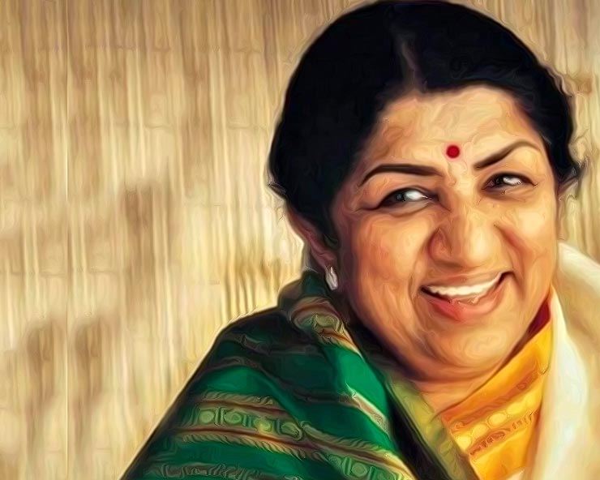

Lata Mangeshkar
The Nightingale of India

Lata Mangeshkar(1929-2022)
A short biography of Lata Mangeshkar :
- Lata Mangeshkar was born as Hema Mangeshkar on 28th September1929
- She was an Indian playback singer and occasional music composer.
- She is widely considered to have been one of the greatest and most influential singers in India.
- Her contribution to the Indian music industry in a career spanning seven decades gained her honorific titles such as the "Queen of Melody", "Nightingale of India", "Voice of the Millennium".
- Lata Mangeshkar recorded songs in over thirty-six Indian languages and a few foreign languages, though primarily in Hindi, Bengali, Marathi.
- She also sang in English, Russian, Dutch, and even Swahili. In 2001, in recognition of her contributions to the nation, she was awarded the Bharat Ratna, India's highest civilian honour; she is only the second female singer, after M. S. Subbulakshmi, to receive this honour.
- She received several accolades and honors throughout her career. In 1989 the Dadasaheb Phalke Award was bestowed on her by the Government of India.
- The Filmfare Lifetime Achievement Award and many more. In 1974, she was one of the first Indian playback singers to ever perform at Royal Albert Hall in London, UK.
- At one point, she appeared in the Guinness World Records which listed her as the most recorded artist in history between 1948 and 1987.
- Her last recorded song was "Saugandh Mujhe Is Mitti ki" released on 30 March 2019 as a tribute to the Indian army and Nation.
- France conferred on her its highest civilian award, Officer of the National Order of the Legion of Honour, in 2007.
- She was the recipient of three National Film Awards, 15 Bengal Film Journalists' Association Awards, four Filmfare Best Female Playback Awards, two Filmfare Special Awards.
- On 28 November 2012, she launched her own music label, LM Music, with an album of bhajans, Swami Samarth Maha Mantra, composed by Mayuresh Pai.
- She sang with her younger sister Usha on the album.
- In 2014, she recorded a Bengali album, Shurodhwani, including poetry by Salil Chowdhury, also composed by Pai. On 30 March 2019, Mangeshkar released the song "Saugandh Mujhe Is Mitti Ki".
- In the 2000s her duets were performed mainly with Udit Narayan and Sonu Nigam.
- 2005-06 were the years of her last well-known songs: "Kaise Piya Se" from Bewafa and "Shayad Yehi To Pyaar Hai" from Lucky: No Time for Love, with Adnan Sami and "Lukka Chhupi" in Rang De Basanti (2006 film) with A. R. Rahman.
- She sang "Ek Tu Hi Bharosa" from Pukar.
- Other notable songs of this decade were from Veer-Zaara, sung with Udit Narayan, Sonu Nigam, Jagjit Singh, Roop Kumar Rathod, and Gurdas Mann.
"It was not really the external influences that made me a singer.Music was within me.I was full of it."
~~ Lata Mangeshkar ~~
If you have time,you should read more about this incredible human being on her Wikipedia entry